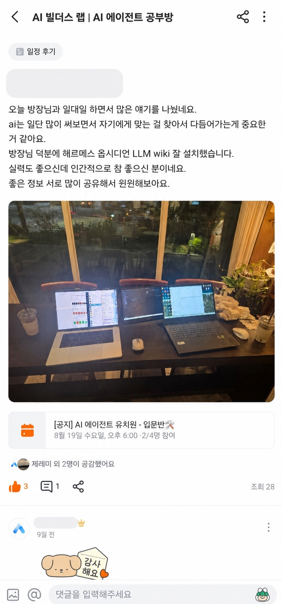
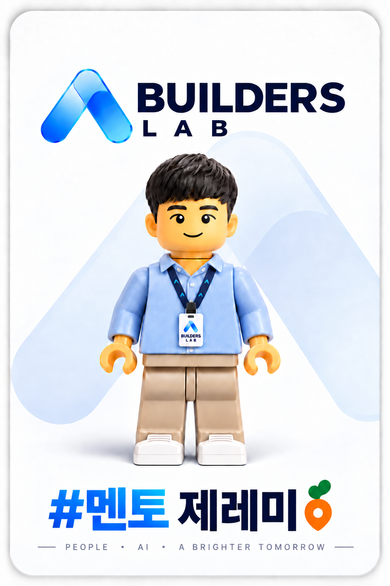
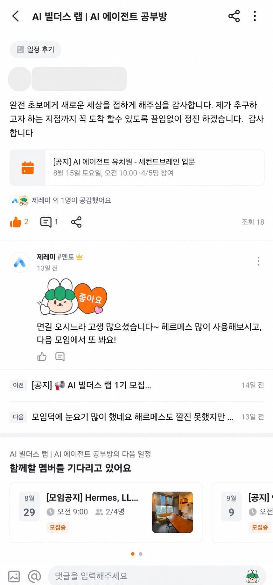
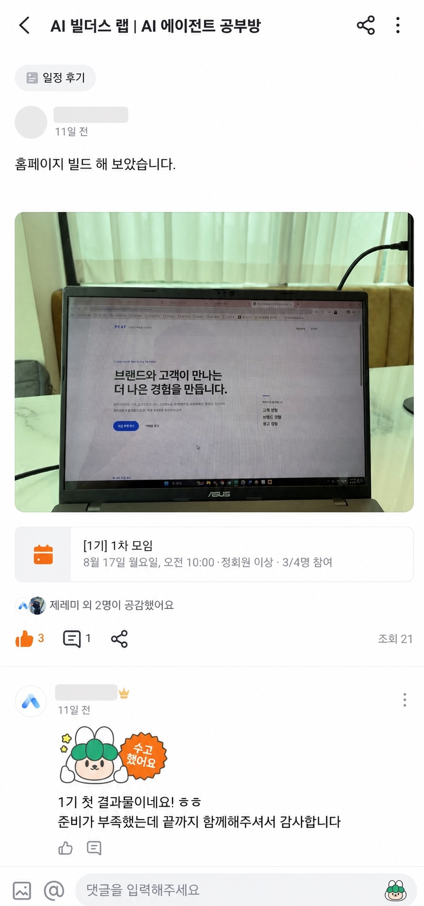
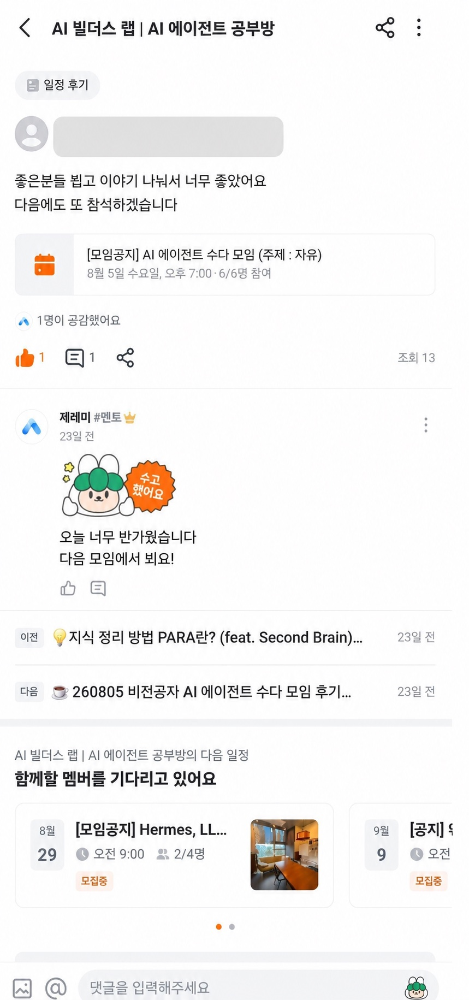
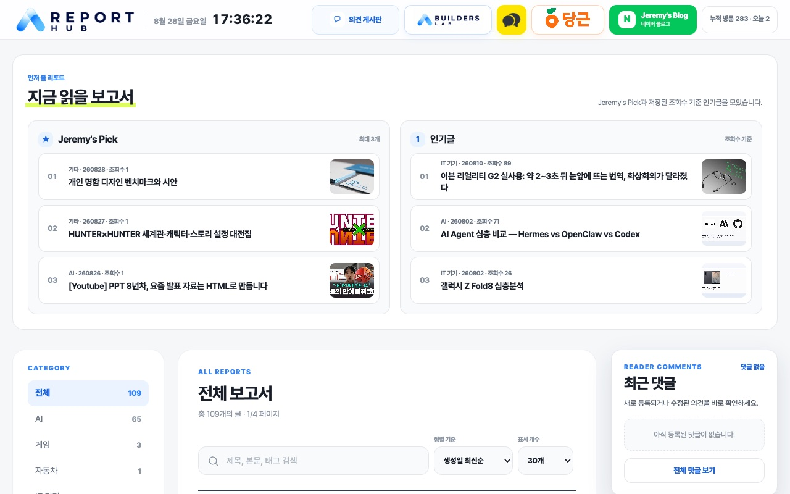
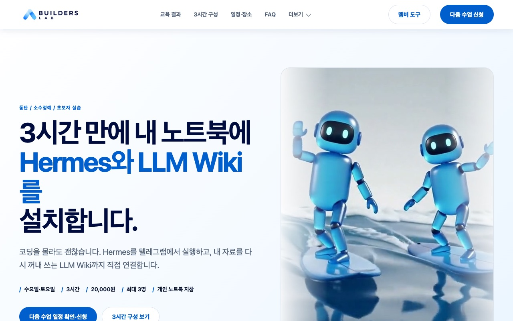
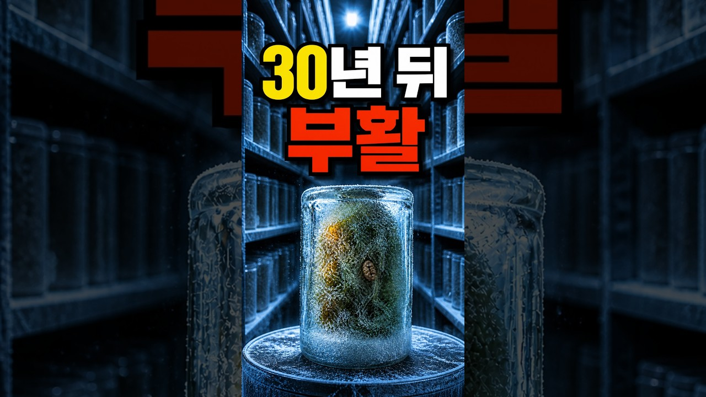
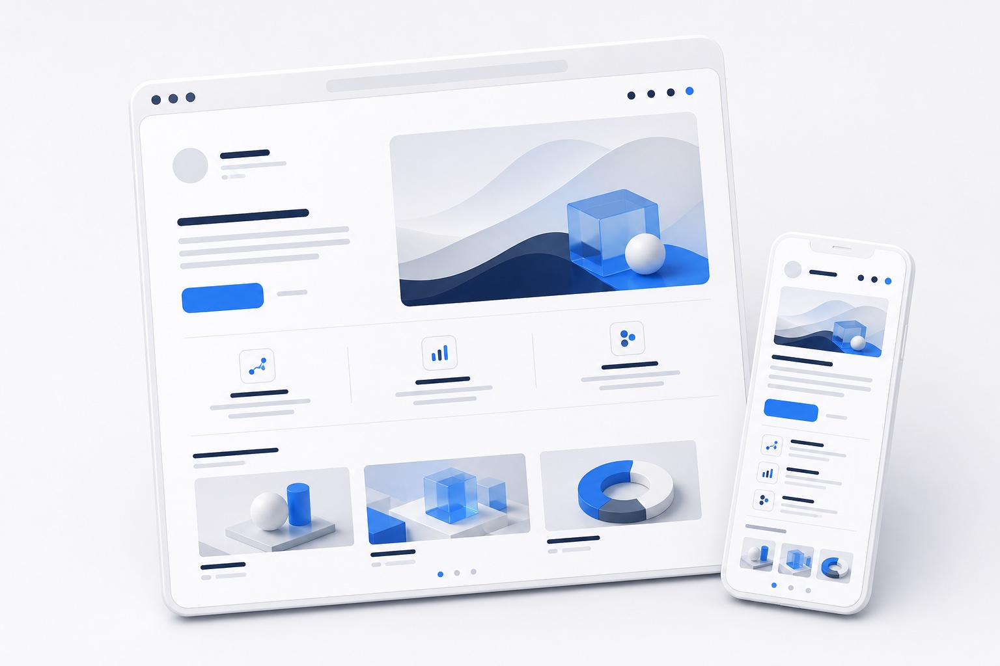
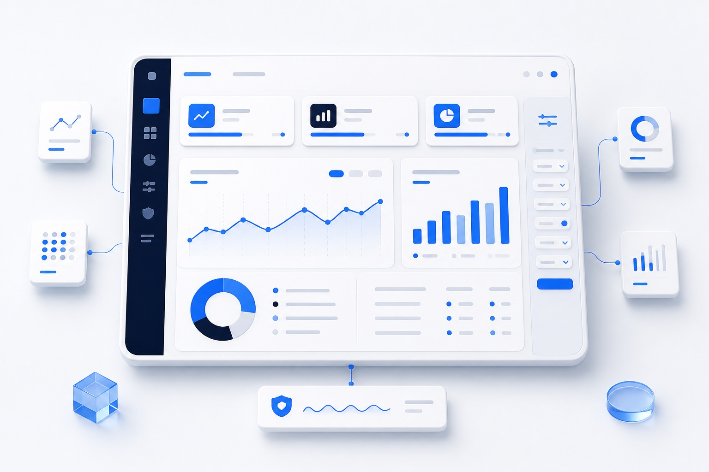

“AI는 일단 많이 써보면서 자기에게 맞는 걸 찾아서 다듬어가는 게 중요한 것 같아요. 덕분에 헤르메스, 옵시디언, LLM wiki를 잘 설치했습니다.”
AI 빌더스 랩 키라쨩
기획부터 캐릭터, 애니메이션까지 AI와 함께 만든 쇼츠입니다. 수업에서는 이런 영상을 직접 만들어 봅니다.
교육 문의비개발자 출신 AI 교육자 Jeremy가 목표 설정부터 첫 실행, 수정과 검수까지 1:1로 함께합니다.

2시간 1:1 AI 실습
2시간 1:1 실습으로 결과물을 직접 만들거나 Hermes와 LLM Wiki를 설치해 기본 사용법을 익힙니다.
실제 수업 현장
한 번에 하나씩 수정하며 결과를 확인하고, 교육이 끝난 뒤에도 같은 과정을 반복합니다.
실제 당근 모임 후기
AI 에이전트 설치부터 홈페이지 완성까지, 모임 참여자가 직접 남긴 후기입니다.

“AI는 일단 많이 써보면서 자기에게 맞는 걸 찾아서 다듬어가는 게 중요한 것 같아요. 덕분에 헤르메스, 옵시디언, LLM wiki를 잘 설치했습니다.”

“완전 초보에게 새로운 세상을 접하게 해주심을 감사드립니다.”
입문 과정 참여자
“홈페이지 빌드 해 보았습니다.”
홈페이지 실습 참여자
“좋은 분들 뵙고 이야기 나눠서 너무 좋았어요. 다음에도 또 참석하겠습니다.”
AI 에이전트 모임 참여자공개용 이미지에는 참여자 닉네임, 프로필 이미지와 위치 정보가 보이지 않도록 처리했습니다.
Jeremy 소개
안녕하세요. AI 교육자 Jeremy입니다. 디스플레이와 OLED 기술, 해외영업 현장에서 일해온 비개발자 출신으로 AI와 대화하며 홈페이지, 대시보드, 자동화 도구를 직접 만들고 운영해왔습니다.
지금은 AI 빌더스 랩에서 비개발자가 자신의 아이디어를 작동하는 결과물로 바꾸도록 돕고 있습니다. 도구 기능을 많이 설명하기보다 목표를 정하고 첫 버전을 만든 뒤, 직접 실행하고 수정하고 검수하는 과정을 함께합니다.
배운 것을 직접 만들고, 경험을 나누며 함께 성장합니다.
Jeremy가 직접 만든 실제 프로젝트
게임과 AI 도구, 홈페이지와 Report Hub를 짧게 살펴보고 바로 실행할 수 있습니다.



교육 커리큘럼
챗봇에게 질문하는 데서 끝나지 않습니다. Codex와 함께 아이디어를 정리하고, 실제 결과물을 만들고, 직접 검수해 웹에 공개합니다.
개발 경험이 없어도 괜찮습니다. 2시간 동안 하나의 결과물을 완성하거나 Hermes와 LLM Wiki를 설치하고, 교육이 끝난 뒤에도 같은 과정을 혼자 반복할 수 있도록 배웁니다.

[기본 설치] 가장 먼저 준비
공식 경로로 프로그램을 설치하고 기본 화면과 실행 상태를 확인합니다.
완성 결과 실행 가능한 Hermes와 기본 LLM Wiki 폴더
설치만 하는 교육입니다. 홈페이지, 대시보드, 게임, 레포트 제작과 텔레그램 연결, Gateway, 자동화는 포함하지 않습니다.
기본 설치 과정 상담하기


질문과 결과물을 나누고, 다음 모임 일정을 확인하고, 단체방에서 서로의 시도를 응원합니다.
교육 일정과 장소는 개별 조율합니다.
강사가 대신 완성하는 제작 서비스가 아닙니다. 참여자가 요청하고 실행하고 수정하는 전 과정을 함께합니다.
현재 상황과 만들고 싶은 것, 사용 중인 노트북을 확인합니다.
수업에서 만들 첫 결과물과 오늘의 완료 기준을 함께 정합니다.
Codex와 필요한 계정이 준비됐는지 교육생이 직접 확인합니다.
참여자가 직접 요청하고 브라우저에서 첫 버전을 실행합니다.
한 항목씩 바꾸고 사실, 기능, 개인정보, 화면을 확인합니다.
강사의 직접 조작 없이 수정 과정을 한 번 더 반복합니다.
공개 범위와 내용을 승인한 뒤 GitHub Pages에 반영합니다.
교육 후 제공 자료
과정에서 사용한 요청문과 검수 순서를 다시 따라 할 수 있도록 학습자료를 제공합니다.
교재 자료실
HTML 교재·실습·편집 가능한 PPT·PDF를 한곳에서 엽니다. 새 교재도 이곳에 계속 업데이트합니다.
현재 업무와 관심사를 바탕으로 가장 적합한 과정을 함께 선택합니다.
준비 상태와 만들고 싶은 결과물을 알려주시면 가장 작은 시작점을 함께 정합니다.
네. 코딩 문법을 외우는 수업이 아니라 Codex와 대화해 계획을 세우고 결과물을 직접 실행하고 수정하는 수업입니다.
윈도우 노트북과 맥북을 모두 지원합니다. 개인 노트북과 충전기, 최신 웹브라우저가 필요합니다. 프로그램 설치 권한이 제한된 회사 노트북은 사전에 알려주세요.
본인이 로그인할 수 있는 ChatGPT 유료 계정과 Codex 이용 가능 상태가 필요합니다. 공개 과정에는 본인의 GitHub 계정도 필요합니다. 비밀번호와 인증번호는 강사에게 전달하지 않습니다.
제작 과정은 홈페이지, 대시보드, 게임, 웹 레포트 중 하나의 첫 버전을 만들고 직접 수정합니다. 설치 과정은 Hermes와 LLM Wiki를 공식 경로로 설치하고 기본 사용법을 확인합니다. 텔레그램 연결과 자동화는 기본 설치 과정에 포함하지 않습니다.
가능한 날짜와 지역을 카카오 오픈채팅으로 알려주시면 개별 조율합니다. 공간 이용료와 장거리 교통비는 예약 전에 안내하며 음료는 각자 부담합니다.
네. 수업 중에 교육생이 직접 한 항목을 수정하고 실행하는 과정을 반복합니다. 현재 결과물의 수정, 오류, 배포 질문은 카카오 오픈채팅으로 문의할 수 있습니다. 신규 기능이나 추가 시간이 필요한 경우 별도 연락 후 협의합니다.
카카오 오픈채팅 프로필에서 문의해주세요. 만들고 싶은 결과물, 사용 중인 노트북, 가능한 날짜와 지역을 함께 알려주시면 상담이 빠릅니다.
현재 업무와 관심사, 사용 중인 노트북과 가능한 시간을 알려주시면 2시간 안에 완성할 가장 적합한 과정을 함께 선택합니다.
내게 맞는 과정 상담하기